一.登录与注册
进入系统后首先进入的是登录界面，输入账号密码登录系统。
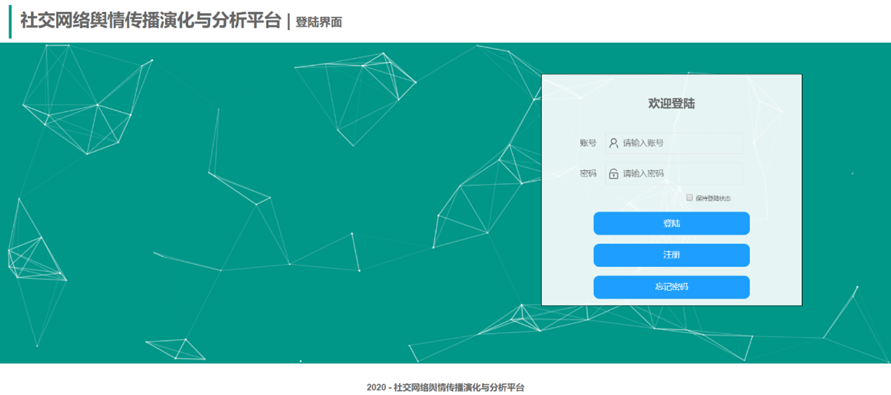
如果用户没有账号，可点击注册按钮进行注册，进入注册页面后，按照提示输入信息点击按钮即可注册。
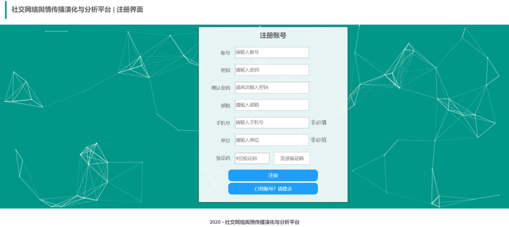
如果用户忘记密码，可点击忘记密码按钮，输入账号和邮箱验证身份，点击下一步，进入修改密码界面。
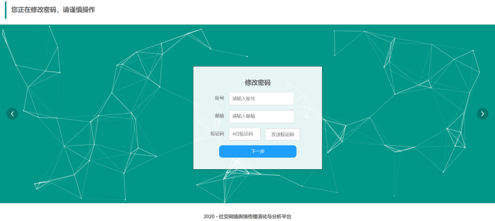
进入修改密码界面后，输入新密码以及确认密码，点击完成按钮，即可进行密码修改，修改成功后会跳转至登录界面。
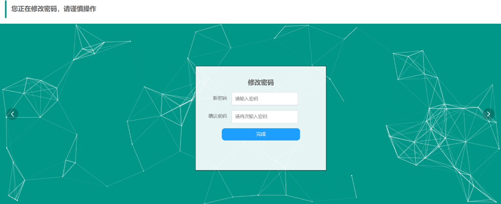
二.主界面
成功登陆后即可进入系统主界面，通过平台主界面左侧所列的功能模块导航按钮可进入各功能模块。
点击上面导航中的使用说明按钮，将进入使用说明界面，介绍了该平台各模块使用方法；
点击上面导航中的关于我们界面按钮，将进入到介绍我们团队成员工作等信息的界面；
点击右上侧的用户按钮，可以查看相关的用户信息；
点击注销账户按钮，用户可以进行账号注销，并跳转到登录页面；点击退出按钮可以退出并跳转到登录界面。
三.舆情演化模块
点击左侧导航“舆情演化”按钮进入舆情演化模块，该模块主要是对网络上的热点话题进行舆情分析，该模块展示了六个类别的舆情演化分析
（默认为“万众一心抗击疫情”话题的舆情演化分析），从不同粒度对该话题在微博上的评论
进行可视化展示并对微博评论进行了词云分析，整体界面如下图所示：
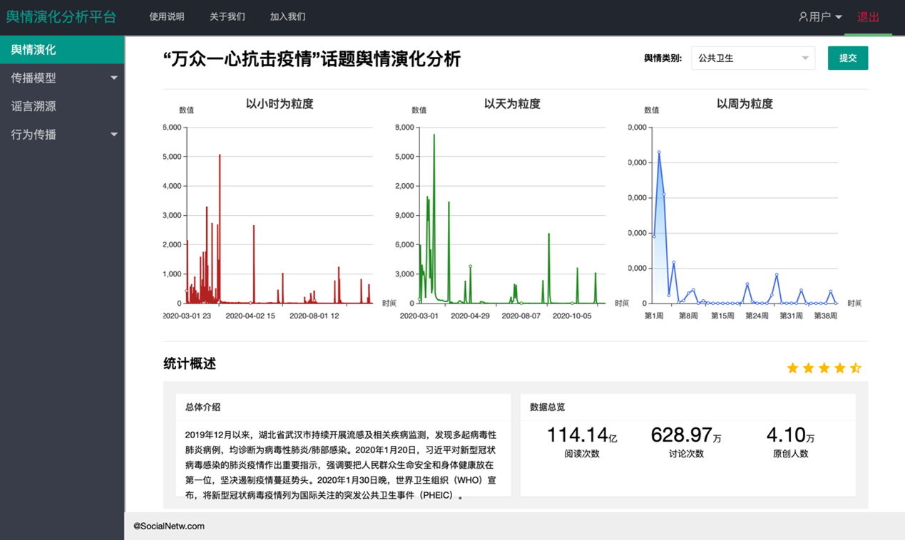
用户可通过页面右侧的下拉框选择类别，默认的舆情类别为“公共卫生”。该模块从小时、天、周这三个粒度对该话题在微博上的评论以折线图的形式进行可视化展示。将鼠标移动到折线图中的节点上时，
可以显示该节点的详细信息，其中包括横坐标、纵坐标和评论的具体数量。
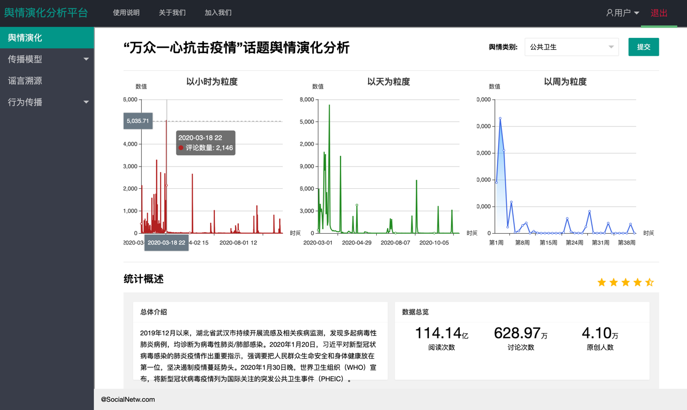
该页面中间部分为统计概述模块，主要包括当前话题的总体介绍和数据总览，对话题的阅读次数、讨论次数、
原创人数进行了展示。
该页面最后一部分为评论的词云展示，词云图片将评论中出现次数较多的关键词进行了直观地展示。关键词出现的次数越多，
该词在词云图片中的字体越大、越醒目。
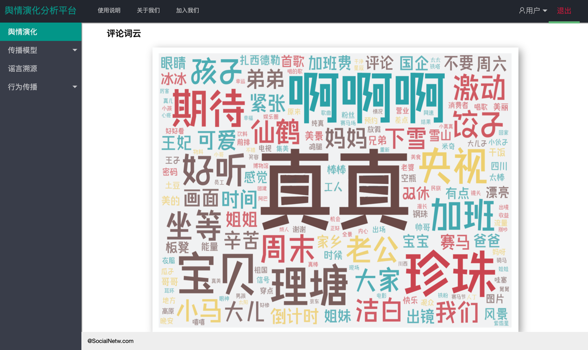
四.传播模型模块
1.SI传播模型
2.SIR传播模型
五.谣言溯源模块
点击左侧导航中谣言溯源模块，该模块分为模型介绍、模型展示和模型对比三部分。
1.模型介绍
点击左侧导航“模型介绍”按钮进入该界面后，该界面介绍了基于部署观测点的谣言溯源模型以及该模型的效果展示图。
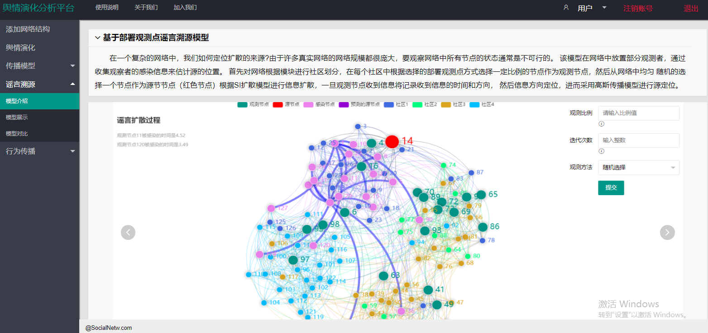
2.模型展示
点击左侧导航“模型展示”按钮将进入，进入该模块后自动展示当前社交网络图，其中不同颜色的节点表示
不同的社区，节点对应的社区名字在顶端展示。右侧是谣言溯源算法需要的输入参数，“观测比例”表示在网络中选择多少节点
记录他们的感染时间，输入值为浮点型，输入值的范围为0.05-0.9，鼠标放在输入框左下角的小图标可以看到输入要求提示；
第二个输入的是“迭代次数”，输入范围为大于1的整数；第三个是选择一种“观测方法”，点击下拉框可以进行选择，
选择观测方法表示以什么样的方式部署观测节点(比如最大度算法，部署观测点的方式是对网络中节点的度进行排序选择度数在大的前K个节点)。
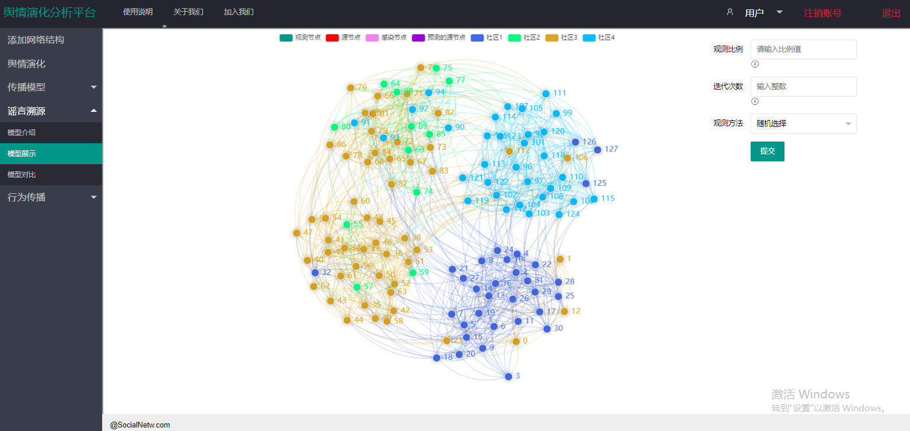
当配置好这些参数之后，点击提交按钮，网络图中的各个节点在谣言溯源算法模型下进行扩散及溯源。
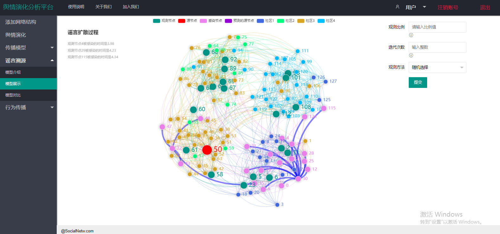
当所有的观测节点均被感染之后，将开始反向传播的过程，计算源节点到各观测的节点的最短路径距离，并在左侧展示。
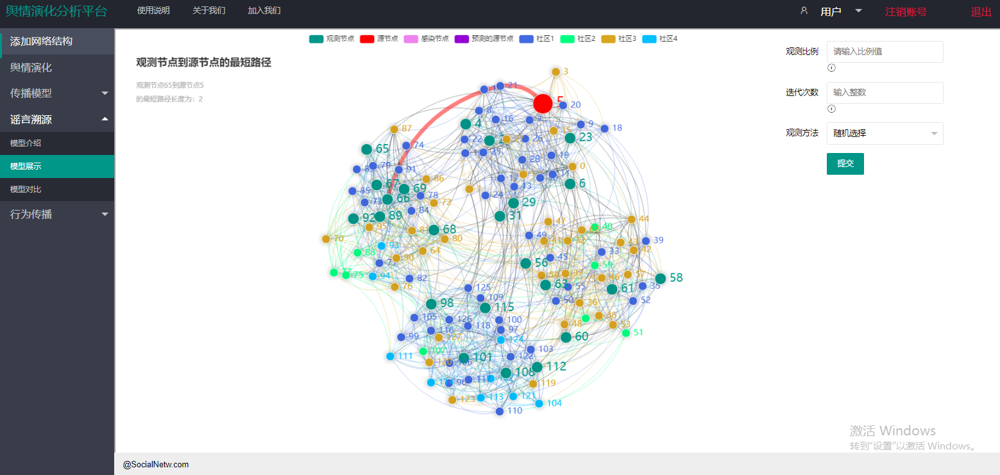
当反向扩散寻找最短路径结束，整个源定位过程结束。其中紫色节点表示预测的源节点，如果网络中没有红色节点表示紫色节点将其覆盖，成功定位到了信息扩散源，同时根据输入的迭代次数会展示每次迭代实际的源节点id，预测的源节点id，以及预测的源节点与真实的源节点的误差距离，
网络图只模拟了第一次的溯源过程，其他的溯源结果在左侧进行展示。
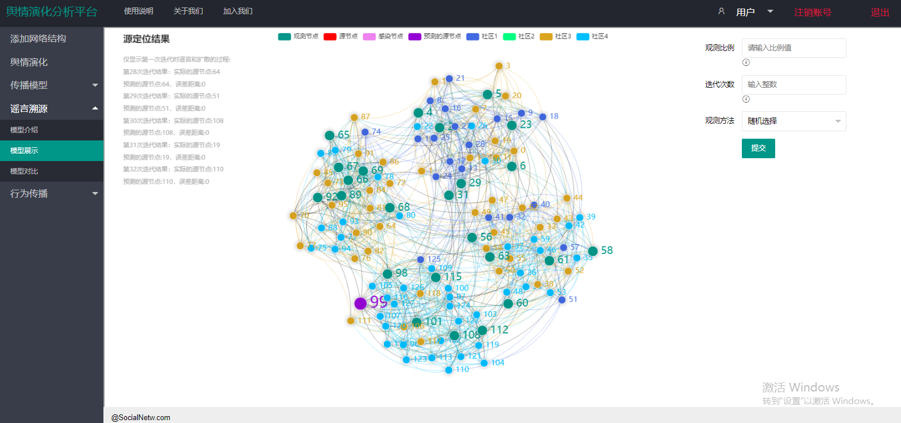
当所有的迭代次数执行完毕，会出现源定位的结果，迭代N次后的准确率以及平均误差距离，柱状图可视化了源定位的结果，其中横轴表示预测的源节点与真实的源节点的误差距离，纵轴表示占总迭代次数的比率。
3.模型对比
点击左侧导航“模型对比”进入模型对比模块，可以进行模型的对比实验(左侧为改进后的溯源模型，右侧为对比溯源模型)。点击左侧导航“模型对比”进入模型对比模块，提供了模型对比试验的模块，可以通过输入相同的模型参数或不同的模型参数进行对比。
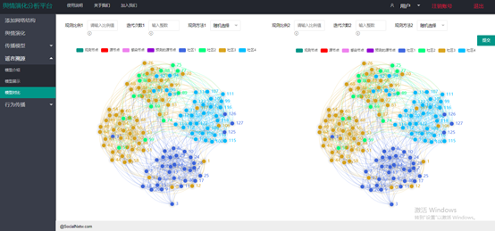
输入参数完成后，然后点击提交可以同时运行两个信息扩散溯源过程。
最后，将获得两个溯源传播模型的对比试验结果。
六.行为传播模块
点击左侧导航中的行为传播按钮，包含两个行为传播模块：基于霍克斯过程的行为传播模块和基于博弈论的不确定行为传播模块
1.基于霍克斯过程的行为传播模块
2.基于博弈论的不确定行为传播模块
点击左侧导航中行为传播模块下的基于博弈论按钮进入该子模块，该子模块分为模型介绍、模型展示和模型对比三部分
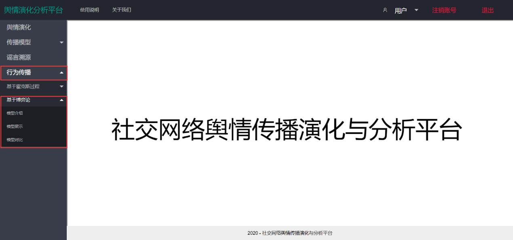
点击左侧导航中“模型介绍”按钮可以查看不确定环境下基于博弈论的行为传播模型以及该模型的效果展示图
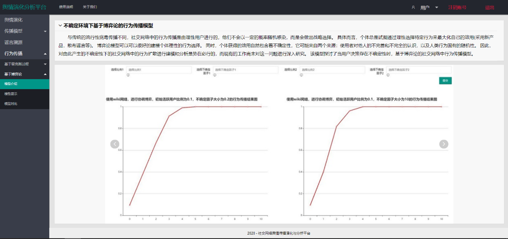
点击左侧导航中“模型展示”按钮将进入该模型基本实验过程的展示界面，进入界面后，界面中央会提示“请配置右边参数”
按照提示输入相应的模型参数（初始活跃节点的比例”的范围0到1之间，表示初始扩散时，网络中进行行为的节点的比例；“不确定因子的大小”输入的值为一个大于0的数，
表示当前网络行为扩散过程中不确定性的大小），选择需要运行的网络以及选择博弈方式（默认的博弈方式为协调博弈，这是基于从众的假设），参数配置完成后
点击提交按钮，界面会展示行为的扩散过程。
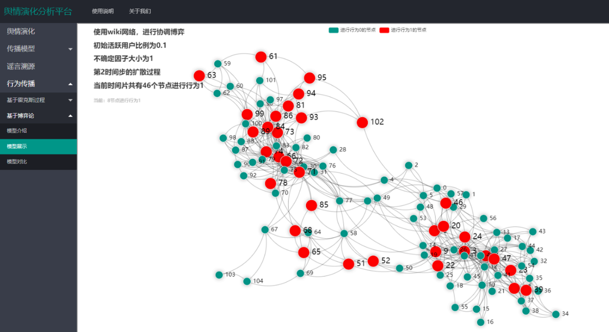
当网络中不再有节点进行行为时，整个行为扩散过程结束。界面将显示最后的传播结果图。
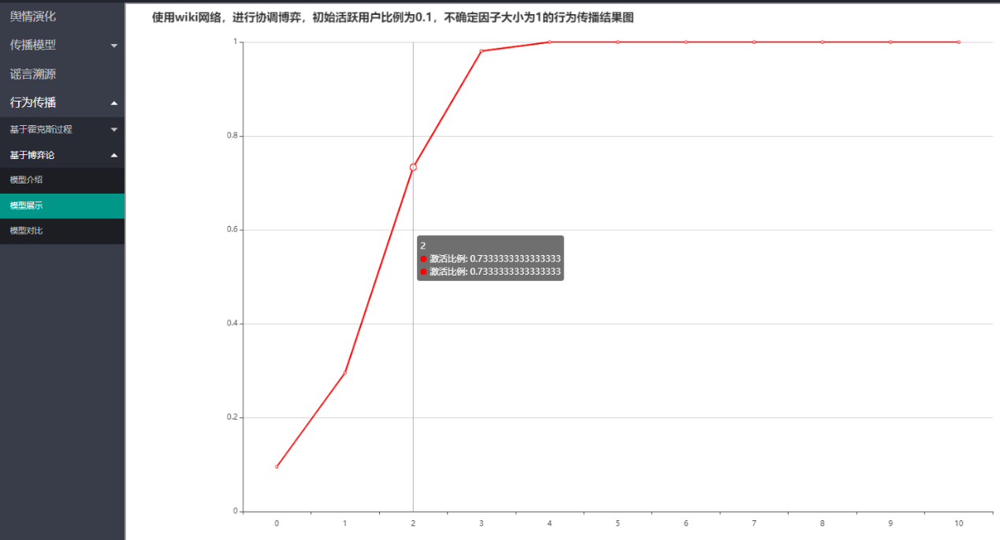
点击左侧导航“模型对比”进入模型对比模块，可以进行模型的对比实验。
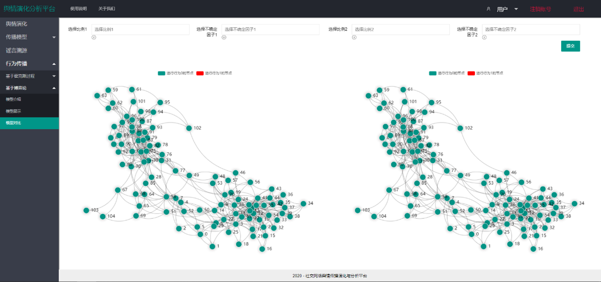
在该模块，使用者可以设置不同的初始活跃节点比例和不确定因子的大小，然后点击提交可以同时运行两个行为扩散过程。
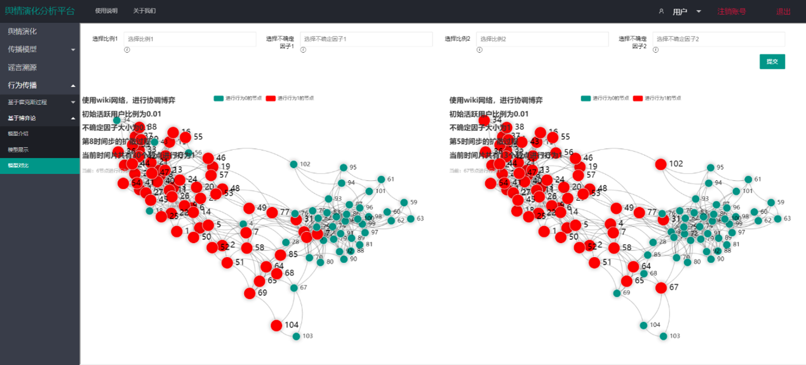
最后，将获得两个行为传播模型的对比试验结果。
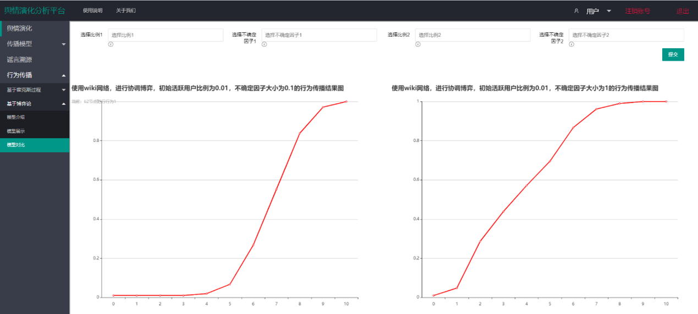